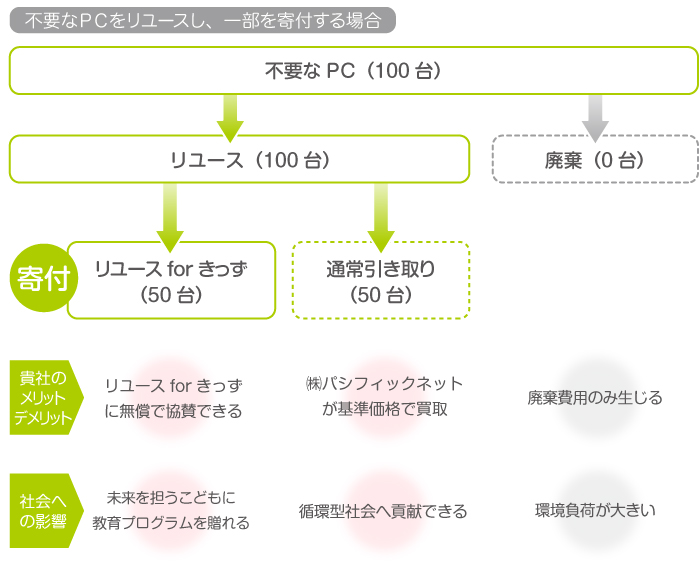
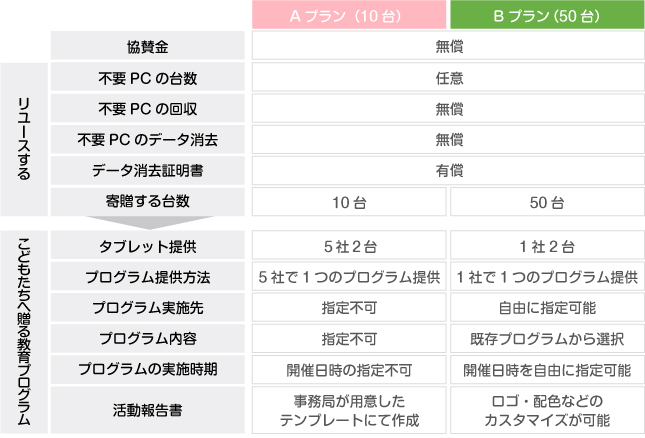
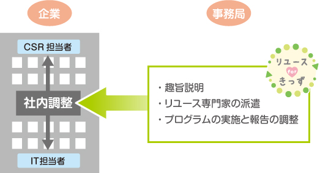
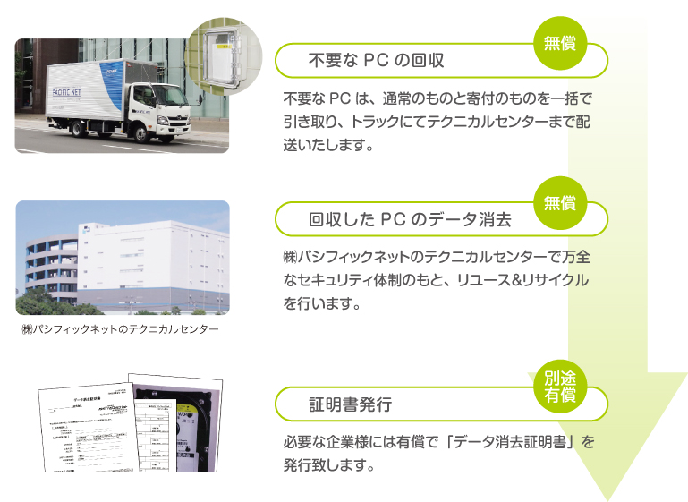
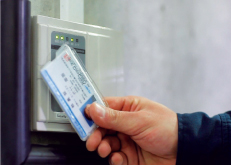
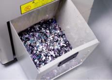
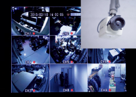
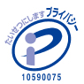
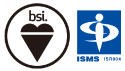
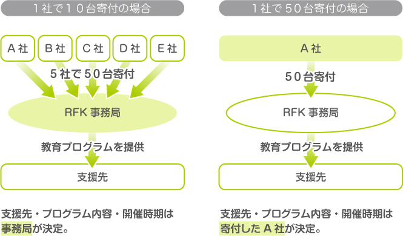

リユースで社会貢献したい法人の方へ
『リユースforきっず』に協賛したいと思ったら、まず社内調整を行って頂き、不要なPCのリユースと寄付プラン（10台か50台）をご決定ください。
その後、不要PCのリユースと教育プログラムを実施し、活動報告書をお届けします。
もちろん不明な点は、事務局が全面サポート致します。下記詳細をご覧いただき気軽にお問い合わせください。
リユースforきっず by PCに協賛頂くまでの５ステップ
不要PCの処分方法として、処分コストが少なく、また環境に配慮した方法としてリユースがあります。
リユースするPCの一部を『リユースforきっず』に寄付頂くことで、こどもたちに教育プログラムを贈ることができます。

リユースするPCのうち10台か50台を寄付頂くことで、『リユース for きっず』に無償で協賛することができます。

ITとCSRなど部門を越えて社内調整が必要な場合は、事務局メンバーが説明のサポートを致します。
お気軽にご相談ください。

Back to top
不要なPCは、パートナー企業である㈱パシフィックネットがリユース & リサイクルを行います。
回収からデータ消去までは無償で実施致しますが、証明書発行のみ有償となります。

㈱パシフィックネットのテクニカルセンターは、万全な情報セキュリティ体制のもと、リサイクル & リユースを行っています。

- 入退出の管理
- 外部からの侵入を防ぐため、入退室時にはカードキーによる認証を行っています。ISMSに準拠した管理体制を全支店で徹底して行っています。

- 媒体管理体制
- 書類やメディアはすべて鍵付きのキャビネットに保管。廃棄の際にはシュレッター処理を行い、情報機器からのデータ流出を防止しています。

- 防犯カメラ
- 情報機器が保管される入荷場所から作業場まで、カメラを設置。外部から侵入はもちろん内部からもデータ漏洩を行えない環境づくりに努めています。
- 社内体制
- セキュリティ対策室を設置し、維持・運用・改善・監査を徹底。従業員教育、内部監査等フレームワークに準じた体制を敷いています。

- プライバシーマーク制度
- 適 用 規 格：JISQ15001 :2006準拠
認証登録番号：第10590075号
認証取得日：平成19年9月18日

- 国際的に整合性のとれた情報
- セキュリティマネジメントに対する
第三者適合性評価制度です。
認証登録番号：IS506516
Back to top
１社で５０台寄付いただいた場合は１社単独でプログラムを開催、１社で１０台を寄付いただいた場合は５社合同でのプログラム開催となります
。
１社で５０台寄付した場合は、支援先・プログラム内容・開催時期を貴社で決めることができます。

Back to top
寄付頂いたPCをリユースし、こども向け教育プログラムを実施後、活動報告書を電子データにてお送り致します。なお活動報告書について、オリジナルデザインをご希望の場合や、動画制作・印刷物など別途ご要望がある場合は有償での対応となります。